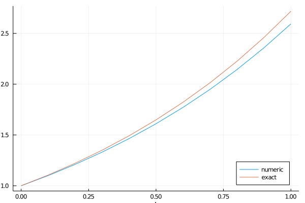
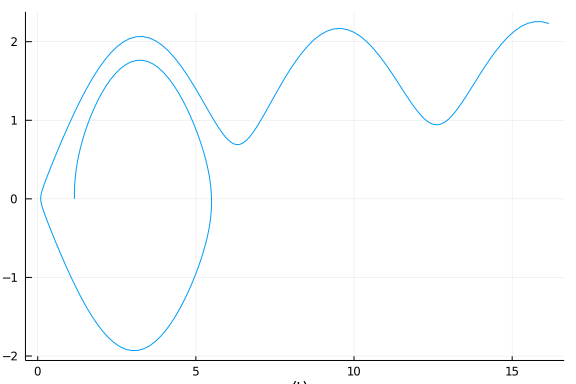
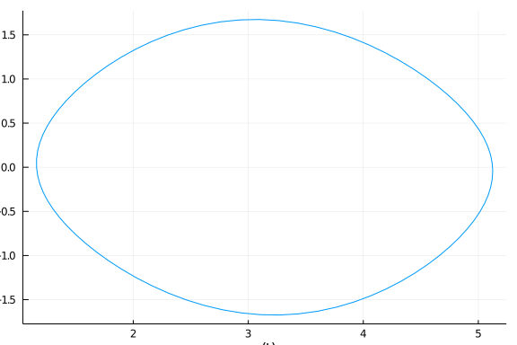

Tutorial
In this tutorial, we try to give an overview of the basic usage of GeometricIntegrators and its main components.
Installation
GeometricIntegrators.jl can be installed using Julia's built-in package manager in the command line interface by
julia> ]
(v1.5) pkg> add GeometricIntegratorsIn a Jupyter notebook, GeometricIntegrators.jl can be installed by explicitly using the Pkg module as
using Pkg
Pkg.add("GeometricIntegrators")This will install the library itself as well as all dependencies.
Basic usage
In the simplest cases, the use of GeometricIntegrators.jl requires the construction of two objects, an equation and an integrator. For many standard methods, the integrator is implicitly selected by specifying an equation and a tableau.
Before any use, we need to load GeometricIntegrators,
using GeometricIntegratorsThen we can create an ODE object for the equation $\dot{x} (t) = x(t)$ with initial condition $x(0) = 1$,
ode = ODE((t, x, ẋ) -> ẋ[1] = x[1], [1.0]);create an integrator for this ODE, using the tableau for the explicit Euler method and a time step of $\Delta t = 0.1$,
int = Integrator(ode, TableauExplicitEuler(), 0.1);and compute the solution for $n_t = 10$ time steps,
sol = integrate(ode, int, 10);Plot and compare with the exact solution
using Plots
plot(xlims=[0,1], xlab="t", ylab="x(t)", legend=:bottomright)
plot!(sol.t, sol.q[1,:], label="numeric")
plot!(sol.t, exp.(sol.t), label="exact")
Equations
In GeometricIntegrators.jl we distinguish between three basic types of equations:
- ordinary differential equations (ODEs),
- differential algebraic equations (DAEs),
- stochastic differential equations (SDEs).
For each type, there are several subtypes
- "normal" equations (
ODE,DAE,SDE), - implicit equations (
IODE,IDAE), - variational equations (
VODE,VDAE), - Hamiltonian equations (
HODE,HDAE), - partitioned equations (
PODE,PDAE,PSDE), - split equations (
SODE,SPDAE).
Ordinary differential equations
Consider an ODE of the form
\[\dot{x} (t) = f(t, x(t)) ,\]
where $\dot{x}$ denotes the derivative of $x$ and $f$ the vector field of the equation, which is assumed to depend on both $t$ and $x$. In the following, we will solve the mathematical pendulum, whose equations are given by
\[\begin{pmatrix} \dot{x}_1 \\ \dot{x}_2 \\ \end{pmatrix} = \begin{pmatrix} x_2 \\ \sin (x_1) \\ \end{pmatrix} .\]
Creating an ODE object requires the prescription of a function that computes the vector field $f$, e.g.,
function ẋ(t, x, v)
v[1] = x[2]
v[2] = sin(x[1])
endẋ (generic function with 1 method)which has to take three arguments, the current time t, the current solution vector x and the output vector f. Moreover, we need a set of initial conditions,
x₀ = [acos(0.4), 0.0]2-element Array{Float64,1}:
1.1592794807274085
0.0An ODE object is than instantiated by
ODE(<vector field>, <initial conditions>; kwargs...)specifically,
ode = ODE(ẋ, x₀);The initial time, ode.t₀ is assumed to be $0$ be default. It can also be specified explicitly by
t₀ = 1.0
ode = ODE(ẋ, t₀, x₀);Partitioned ordinary differential equations
The pendulum problem is a Hamiltonian system that can also be expressed as
\[\dot{q} = \frac{\partial H}{\partial p} = p , \hspace{3em} \dot{p} = - \frac{\partial H}{\partial q} = \sin (q) , \hspace{3em} H (q,p) = \frac{1}{2} p^2 + \cos (q) .\]
This structure, namely the partitioning into two sets of variables $(q,p)$ instead of $x$, can be exploited for more efficient integration. Such equations can be defined in terms of a partitioned ODE, where the vector fields are specified separately,
function q̇(t, q, p, v)
v[1] = p[1]
end
function ṗ(t, q, p, f)
f[1] = sin(q[1])
end
pode = PODE(q̇, ṗ, [acos(0.4)], [0.0]);The first two arguments to the PODE constructor are the functions that determine the vector fields of the equations $\dot{q} (t) = v(t, q(t), p(t))$ and $\dot{p} (t) = f(t, q(t), p(t))$. The third and fourth argument determines the initial conditions of $q$ and $p$, respectively. The functions defining the vector field have to take four arguments, the current time t, the current solution vectors q and p and the output vector v or f.
Integrators
We support a number of standard integrators (geometric and non-geometric) like explicit, implicit and partitioned Runge-Kutta methods, splitting methods and general linear methods (planned).
In order to instantiate many of the standard integrators, one needs to specify an ODE, a tableau and a timestep, e.g.,
int = Integrator(ode, TableauExplicitEuler(), 0.1);In order to run the integrator, the integrate() functions is called, passing an integrator object and the number of time steps to integrate:
sol = integrate(ode, int, 250);The integrate function automatically creates an appropriate solution object, that contains the result of the integration.
plot(sol.q[1,:], sol.q[2,:], xlab="x(t)", ylab="y(t)", legend=:none)
Observe that the explicit Euler method is not well suited for integrating this system. The solutions drifts away although it should follow closed orbits.
For a Hamiltonian system, defined as a PODE, a different tableau might be more appropriate, for example a symplectic Euler method,
int = Integrator(pode, TableauSymplecticEulerA(), 0.1)
sol = integrate(pode, int, 250);This creates a different integrator, which exploits the partitioned structure of the system. The solution return by the integrate step will also be a different solution, adapted to the partitioned system.
plot(sol.q[1,:], sol.p[1,:], xlab="q(t)", ylab="p(t)", legend=:none)
Moreover, this method respects the Hamiltonian structure of the system, resulting in closed orbits following the contours of the system's energy.
Tableaus
Many tableaus for Runge-Kutta methods are predefined and can easily be used like outlined above. In particular, this includes the following methods:
Explicit Runge-Kutta Methods
| Function | Order | Method |
|---|---|---|
TableauExplicitEuler | 1 | Explicit / Forward Euler |
TableauExplicitMidpoint | 2 | Explicit Midpoint |
TableauHeun2 | 2 | Heun's Method of order two |
TableauHeun3 | 3 | Heun's Method of order three |
TableauRalston2 | 2 | Ralston's Method of order two |
TableauRalston3 | 3 | Ralston's Method of order three |
TableauRunge | 2 | Runge's Method |
TableauKutta | 3 | Kutta's Method |
TableauRK416 | 4 | Explicit 4th order Runge-Kutta (1/6 rule) |
TableauRK438 | 4 | Explicit 4th order Runge-Kutta (3/8 rule) |
Diagonally Implicit Runge-Kutta Methods
| Function | Order | Method |
|---|---|---|
TableauCrankNicolson | 3 | Crank-Nicholson Method |
TableauKraaijevangerSpijker | 3 | Kraaijevanger & Spijker's Method |
TableauQinZhang | 3 | Qin & Zhang's Method |
TableauCrouzeix | 3 | Crouzeix's Method |
Fully Implicit Runge-Kutta Methods
| Function | Order | Method |
|---|---|---|
TableauImplicitEuler | 1 | Implicit / Backward Euler |
TableauImplicitMidpoint | 2 | Implicit Midpoint |
TableauSRK3 | 4 | Symmetric Runge-Kutta s=3 |
Gauß, Radau and Lobatto Methods
| Function | Order | Method |
|---|---|---|
TableauGLRK) | 2s | Gauss-Legendre |
TableauRadauIA | 2s-1 | Radau-IA |
TableauRadauIIA | 2s-1 | Radau-IIA |
TableauLobattoIIIA | 2s-2 | Lobatto-IIIA |
TableauLobattoIIIB | 2s-2 | Lobatto-IIIB |
TableauLobattoIIIC | 2s-2 | Lobatto-IIIC |
TableauLobattoIIIC̄ | 2s-2 | Lobatto-IIIC̄ |
TableauLobattoIIID | 2s-2 | Lobatto-IIID |
TableauLobattoIIIE | 2s-2 | Lobatto-IIIE |
TableauLobattoIIIF | 2s | Lobatto-IIIF |
TableauLobattoIIIG | 2s | Lobatto-IIIG |
All of these tableaus are generated on the fly and take the number of stages s as parameter.
Explicit Partitioned Runge-Kutta Methods
| Function | Order | Method |
|---|---|---|
TableauSymplecticEulerA | 1 | Symplectic Euler A |
TableauSymplecticEulerB | 1 | Symplectic Euler B |
TableauLobattoIIIAIIIB2 | 2 | Lobatto-IIIA-IIIB |
TableauLobattoIIIBIIIA2 | 2 | Lobatto-IIIB-IIIA |
Custom Tableaus
If required, it is straight-forward to create a custom tableau. The tableau of Heun's method, for example, is defined as follows:
a = [[0.0 0.0]
[1.0 0.0]]
b = [0.5, 0.5]
c = [0.0, 1.0]
o = 2
tab = TableauERK(:heun, o, a, b, c)TableauERK{Float64}(:heun, 2, 2, Runge-Kutta Coefficients heun with 2 stage
s and order 2 a = [0.0 0.0; 1.0 0.0] b = [0.5, 0.5] c = [0.0, 1.0])Here, o is the order of the method, a are the coefficients, b the weights and c the nodes. TableauERK states that the method is explicit. Other choices include TableauFIRK for fully implicit Runge-Kutta methods, TableauDIRK for diagonally implicit and TableauSIRK for singly implicit Runge-Kutta methods. TableauEPRK and TableauIPRK can be used for explicit and implicit partitioned Runge-Kutta methods. The first parameter of the constructor of each tableau assigns a name to the tableau. Such custom tableaus can be used in exactly the same as standard tableaus, e.g., by
int = Integrator(ode, tab, 0.1)
sol = integrate(ode, int, 10);making it very easy to implement and test new methods.
Solutions
In what we have seen so far, the solution was always automatically created by the integrate() function. While this is often convenient, it is sometimes not performant, e.g., when carrying out long-time simulations with intermediate saving of the solution. In such cases, it is better to preallocate a solution object by
sol = Solution(ode, 0.1, 10);where the first argument is an equation, the second argument is the time step and the third argument is the number of time steps that will be computed in one integration step. The call to the integrator is then made via
integrate!(int, sol)If several integration cycles shall be performed, the reset!() function can be used to copy the solution of the last time step to the initial conditions of the solution,
for i in 1:10
# integrate!(int, sol)
#
# save or process solution
#
# reset!(sol)
endAll solutions have a t field holding the series of time steps that has been computed in addition to several data fields, for example q for an ODE solution, q and p for a PODE solution, qand λ for a DAE solution, and q, p and λ for a PDAE solution.